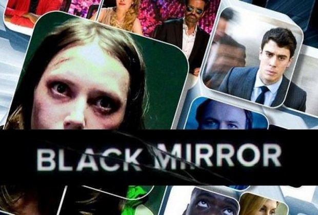
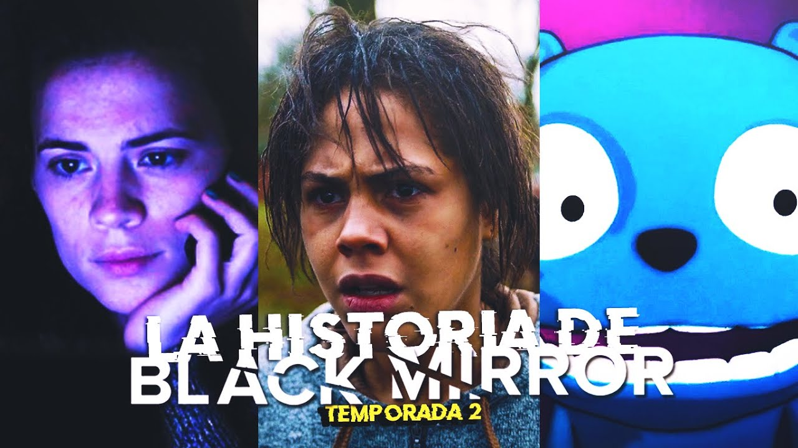

Temporada 1
El primer ministro
Michael Callow se enfrenta a un impactante dilema cuando la princesa Susannah, miembro muy querido de la familia real, es secuestrada. El captor pide que el primer ministro mantenga relaciones sexuales con un cerdo en directo a cambio de la vida de la princesa.
15 Millones de Méritos
Un mundo donde la gente gana méritos haciendo ejercicio para generar energía; los méritos se emplean para comprar comida, aseo y saltar anuncios publicitarios indeseados. En este entorno, la gente aspira a mejorar su vida usando sus talentos para el canto, o para la pornografía.
Toda nuestra Historia
En un futuro cercano, todo el mundo tendrá acceso a un implante de memoria que grabe todo lo que los humanos hagan, vean y oigan.
Temporada 2
Vuelvo enseguida
Después de enterarse de un nuevo servicio que permite a la gente estar en contacto con los muertos, Martha, solitaria y afligida, conecta con su difunto novio.
Oso blanco
Victoria se despierta y no puede recordar nada de su vida. Todo el mundo con el que se encuentra, se niega a comunicarse con ella.
El momento Waldo
Un cómico fracasado que pone la voz a un oso de dibujos animados se ve arrastrado a la política cuando los ejecutivos quieren que el oso se presente como candidato.